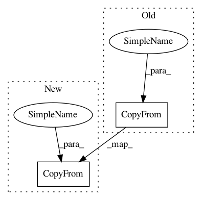

f22b843a42b1cd65e34ee7e70866145ceb98f15e,server/bert_serving/server/graph.py,,convert_variables_to_constants,#,146
Before Change
if use_fp16 and dtype.type == types_pb2.DT_FLOAT:
need_convert = True
output_node.attr["dtype"].CopyFrom(
attr_value_pb2.AttrValue(type=types_pb2.DT_HALF) if need_convert else dtype)
output_node.attr["value"].CopyFrom(
attr_value_pb2.AttrValue(
tensor=tensor_util.make_tensor_proto(
data.astype("float16") if need_convert else data,
After Change
new_dtype = attr_value_pb2.AttrValue()
new_dtype.CopyFrom(dtype)
new_dtype.type.CopyFrom(types_pb2.DT_HALF)
output_node.attr["dtype"].CopyFrom(new_dtype)
output_node.attr["value"].CopyFrom(
attr_value_pb2.AttrValue(
tensor=tensor_util.make_tensor_proto(data.astype("float16"),
dtype=types_pb2.DT_HALF,
In pattern: SUPERPATTERN
Frequency: 3
Non-data size: 2
Instances
Project Name: hanxiao/bert-as-service
Commit Name: f22b843a42b1cd65e34ee7e70866145ceb98f15e
Time: 2019-01-17
Author: hanhxiao@tencent.com
File Name: server/bert_serving/server/graph.py
Class Name:
Method Name: convert_variables_to_constants
Project Name: hanxiao/bert-as-service
Commit Name: 4058e4efcc07421fb93e400ad24e72a459776217
Time: 2019-01-17
Author: hanhxiao@tencent.com
File Name: server/bert_serving/server/graph.py
Class Name:
Method Name: convert_variables_to_constants